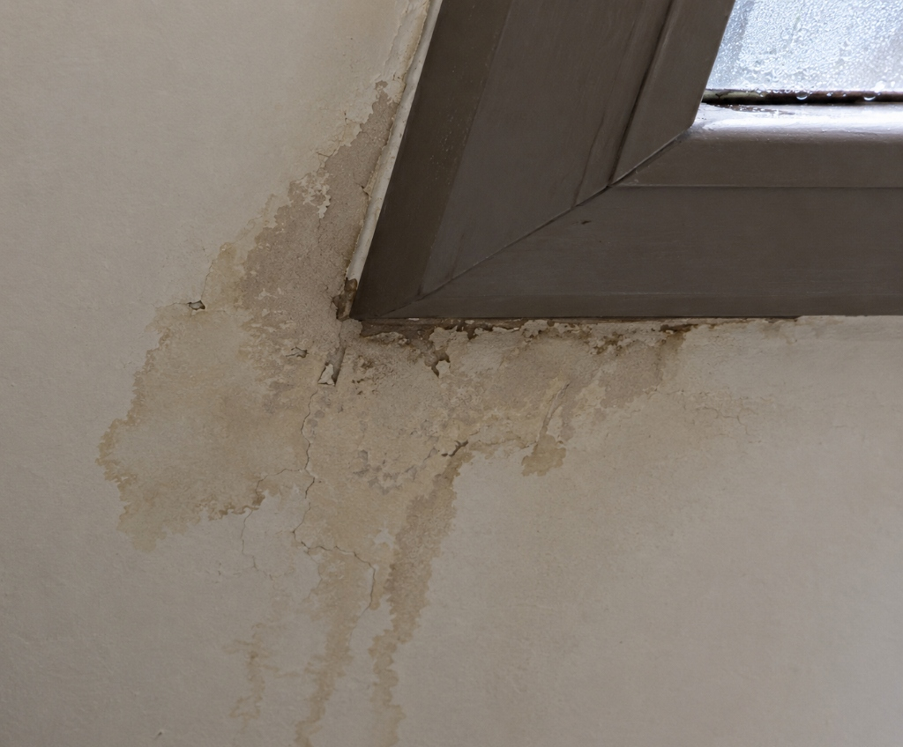
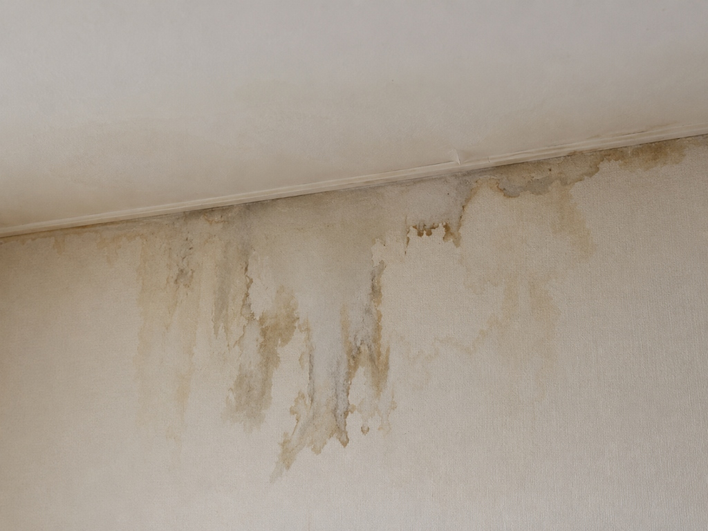
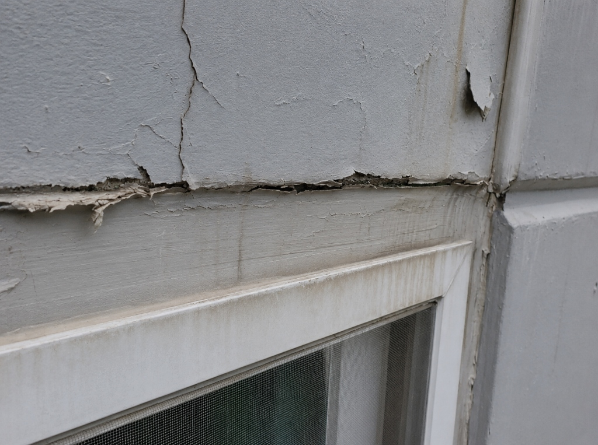
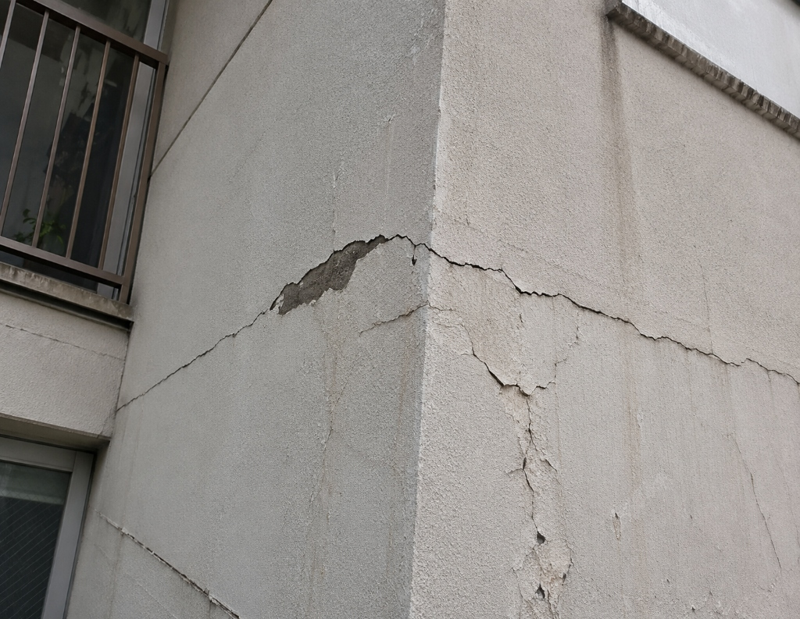

비 올 때만 보이는 창틀 주변 흔적, 겉면보다 유입 지점부터 확인합니다. 외벽 균열, 샷시 접합부, 기존 실리콘 상태를 함께 확인해 현장에 맞는 보수 방향을 안내합니다.




작은 물기처럼 보여도 외벽·샷시·실리콘 틈으로 빗물이 들어온 흔적일 수 있습니다.
내부로 들어온 빗물이 고였다는 신호일 수 있습니다.
물기가 안쪽으로 번지고 있다는 흔적일 수 있습니다.
갈라진 실리콘은 빗물이 들어가는 틈이 될 수 있습니다.
창틀 밖에서 시작되는 물길이 될 수 있습니다.
2가지 이상 해당된다면 창틀·샷시·외벽 주변 상태를 함께 확인하는 것이 좋습니다.
눈에 보이는 한 곳만 확인하는 것이 아니라, 빗물이 유입되는 실제 원인을 함께 살펴보는 것이 중요합니다.
올케어는 해당 지역의 생활권별 건물 특징과 기후 특성을 고려하여 누수 원인을 정밀하게 진단합니다.
올케어는 보이는 흔적만 보지 않고, 빗물이 들어오는 경로를 함께 확인합니다.
물이 보이는 위치와 실제 유입 지점은 다를 수 있습니다. 외벽·샷시·창틀 상부를 함께 확인합니다.
창틀 밖에서 물길이 시작될 수 있습니다.
빗물이 프레임 안쪽으로 스며들 수 있습니다.
실내에서는 다른 위치에 늦게 나타날 수 있습니다.
실내에 다가오기 전, 외부에서 시작된 지점을 먼저 찾습니다.
증상 확인 → 외벽·샷시 점검 → 기존 실리콘 확인 → 상태별 보수 → 마감 검수 순서로 진행합니다.
젖은 위치와 반복 시점을 확인합니다.
균열, 접합부, 창틀 상부를 함께 봅니다.
들뜸, 경화, 균열 상태를 확인합니다.
덧방, 부분 제거, 외벽보수를 구분합니다.
마감 상태와 관리 방법을 안내합니다.
외벽 균열, 창틀 실리콘, 샷시 접합부 등 현장 원인에 맞춰 보수한 사례입니다.
적벽돌 외벽의 줄눈 노후화로 빗물이 내부로 유입되던 현장입니다. 부식된 줄눈을 긁어내고 꼼꼼한 방수 실링 작업을 진행해 누수를 차단했습니다.
노후되고 수축하여 벽체와 분리된 기존 외부 실리콘을 제거하고 친환경 고접착 실리콘으로 정석 광폭 마감했습니다.
외벽 콘크리트 방수 도막 노화와 미세 균열로 인해 세대 내부로 누수가 생기던 곳입니다. 균열부를 보수하고 고기능성 외벽 방수 처리를 실시했습니다.
상담 시 가장 많이 여쭤보시는 내용을 정리했습니다.